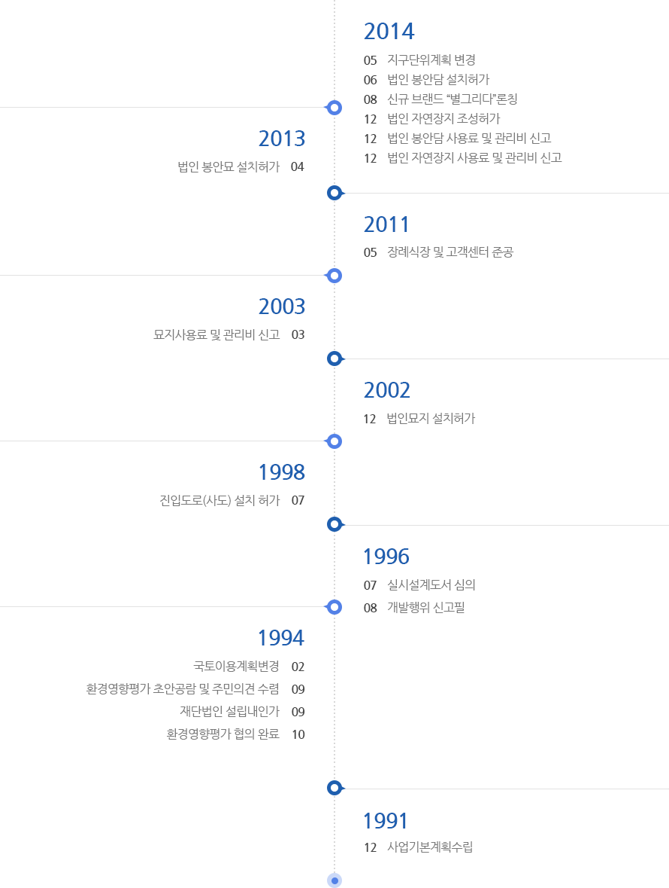

별, 그리고 그리움
인사말
사업내용
사업연혁
모델소개
BI소개
재단소개
오시는 길
브랜드스토리
철학
핵심가치
사람들
남다른 당신
떠나는 당신
추억되는 당신
약속
Carewell
Farewell
Sharewell
바름과 다름
남다르게
소풍가듯(주변환경)
소중하게(관리환경)
섬세하게(시설환경)
장사관련정보
장례제례정보
종교별 장례
장례예절
장례용어
제례정보
장사관련법률
장사관련서식
관련시설정보
장례시설
화장시설
홍보자료실
멀티미디어
전자카다로그
인쇄광고
갤러리
매거진
고객센터
공지&소식
자주하는 질문
상담 및 민원신청
맛집, 멋집
맛집
멋집
부대시설
홈
> 별, 그리고 그리움 > 사업연혁
사업연혁
별이 된 모든 분들과 그 별을 그리워하는 분들에게 바칩니다.
